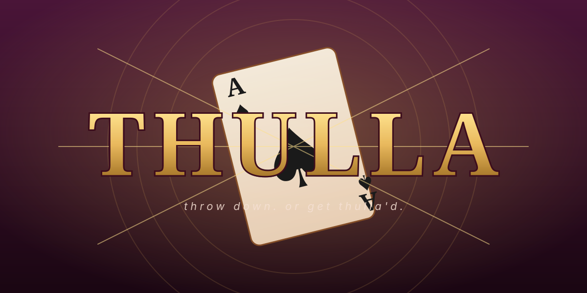

Right-click any image below → Save image as… to grab a PNG. Or take a screenshot at higher zoom (browser zoom 200%+) for higher resolution. The SVG sources are in public/logo-wordmark.svg, public/logo-icon.svg, and public/favicon.svg.

1. Open this file by double-clicking logo-preview.html after you've cloned the repo.
2. Right-click the SVG image → Save image as… — most browsers will save as SVG. To get PNG:
a) Use cloudconvert.com/svg-to-png — drop in the SVG, get a PNG out.
b) Or open the SVG in your browser, zoom in to ~200%, and screenshot at high resolution.
3. For Instagram/TikTok profile pic: use the square icon (1024×1024). For banners: use the wordmark.
4. Once you have your domain (playthulla.vercel.app), this preview page will be at playthulla.vercel.app/logo-preview.html — bookmark for easy access.